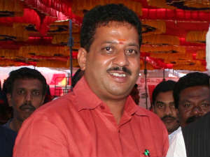
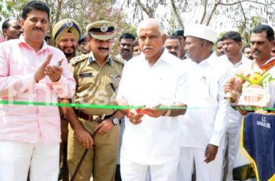

1 / 3

2 / 3

3 / 3

S.R.VISHWANATH has been the MLA of yelahanka for many years on a stretch.He represents the Yelahanka (Vidhan Sabha constituency) constituency.Contribution
The Yelahanka pre-2008 and post-2008 has been just opposite. After BIAL came up in North Bangalore there was a definite conclusion that the development of this area would be a challenging one. SR Vishwanath who jumped to the fray in 2008 and won from Yelahanka (Vidhan Sabha constituency) constituency has relentlessly worked towards developing this constituency.
He is respected as PEOPLE's MAN in this constituency and also revered as PROGRESSIVE MAN. Be it town planning, Protection of Water Bodies and development works, he has been in the fore front right from the planning stage till its completion
Projects
1. Yelahanka Lake 2. Allalasandra Lake 3. Raja Kaaluve Project 4. Swachh Bharat Abhiyaan 5. Road development works 6. Water supply 7. Infrastructure development 8. Development of Government Schools and Colleges
Accessibility
The MLA has not only offered himself to the development of the constituency but also is accessible to the electorate and citizens 24 hours round the clock.
SR Vishwanath can be reached on Facebook at , on twitter , has now website for yelahanka. Complaints and Civic issues can be lodged online by the citizens of YELAHANKA.
Flagships
SR Vishwanath with his vision and rigorous thought process has taken Yelahanka to the next level of development leaving less room for his opponents. Next project on hand is providing Piped Natural Gas (PNG) to all apartments in the constituency so that a helping hand can be lent to GOI's Pet Project of Providing GAS Cylinders to Rural Poor.
Another one is developing Yelahanka Lake to a tourist SPOT with facility of Boating and other water themes in future enhancements.